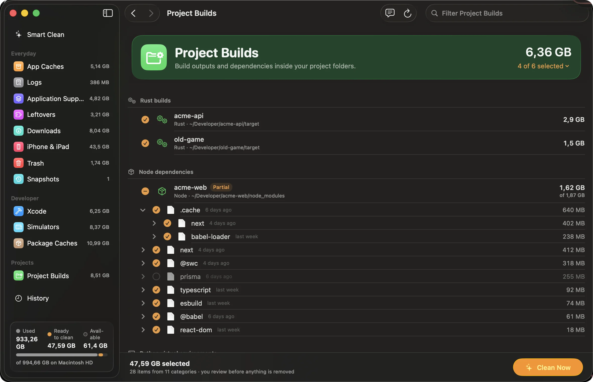
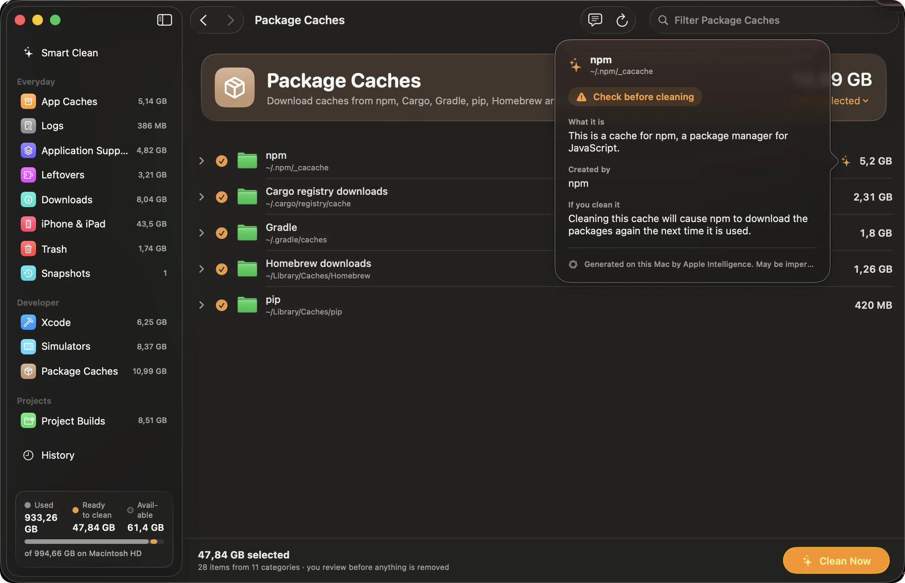
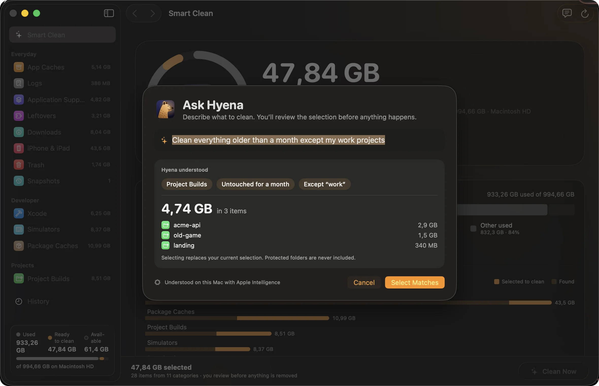
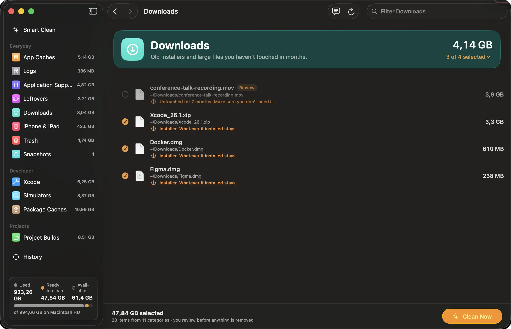
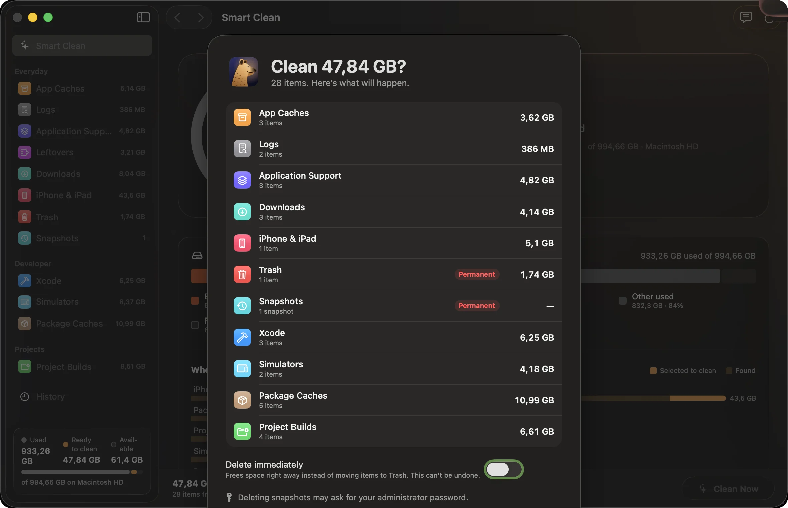

Big finds. No leaks.
We pointed Hyena at one working Mac. It found 47.84 GB of caches, logs, leftovers and builds, 26.6 GB of it in a single npm cache. The on-device model that explained every item sent nothing anywhere.
Why a hyena
On the savanna, spotted hyenas are the clean-up crew. The job they do there is the job Hyena does on your Mac.
- They finish what others leave.
- Long after lions and vultures move on, hyenas eat the rest, bones included.
- Hyena finds the leftovers other tools walk past.
- Nothing goes to waste.
- Their gut breaks bone down, and its minerals return to the savanna’s soil.
- The space Hyena frees goes straight back to your work.
- A cleaner savanna is a healthier one.
- Clearing carcasses quickly helps keep disease from spreading to every animal around.
- Regular checks stop clutter spreading before the disk fills.
- They hunt, too.
- Spotted hyenas are skilled hunters and catch most of what they eat themselves.
- Hyena doesn’t wait for a full disk; it sniffs out what’s piling up.
On every Mac
- cachesbrowsers, Spotify, Slack, every app
- trashstill full, still counting
- installers.dmg and .pkg left in Downloads
- backupsold iPhone backups, reviewed first
- leftoversfrom apps you deleted long ago
- logswritten once, read never
And on a developer’s
- node_modulesbeside package.json
- targetbeside Cargo.toml or pom.xml
- deriveddataXcode, per project
- simulatorsthe ones that can’t even boot
- .gradlebeside build.gradle
- __pycache__any Python project
Eighteen ecosystems, each matched by the file that sits beside its leftovers. A folder that only shares a name is never touched.
Sniff, review, clean
The real thing
Native SwiftUI, Liquid Glass on macOS 26. Drag or scroll sideways.
-

Look inside anything. Open node_modules, keep what you want, clean the rest.
-

What is this? Every folder explained on-device, with a verdict.
-

Ask Hyena. Say what to clean in your own words; see what it selects first.
-

For every Mac. Old installers go; that video from last spring waits for you.
-

One honest summary. What goes, what’s permanent, and how to undo it.
It thinks on your Mac, and it never deletes a thing on its own.
On macOS 26 with Apple Intelligence, Hyena uses Foundation Models locally. Everywhere else it falls back to built-in rules, so every feature still works. No account, no analytics, no network calls when it cleans.
Help it hunt.
Hyena is open source and grows with every contribution: new detectors, sharper suggestions, fixes, design. It all happens on GitHub, and first pull requests are welcome.
git clone https://github.com/Hyena-App/hyena.git
cd hyena && swift test
zsh scripts/build-app.sh && open dist/Hyena.app- Pick up an issue Browse what’s open, comment to claim one, and send a pull request.
- Teach it a new ecosystem Go, Android, Bazel: add a detector with its marker file and a test.
- Tell it what it missed A folder eating your disk that Hyena doesn’t know yet? Open an issue.
- Report a safety bug Anything that could touch the wrong file is treated as a security issue.
Fair questions
Is it only for developers?
No. Caches, Trash, old installers, iPhone backups and leftovers from deleted apps pile up on every Mac. Developer folders are a bonus.
Can I contribute?
Please do. Hyena is open source under the MIT license; issues and pull requests are welcome on GitHub.
Does Hyena delete things on its own?
No. It suggests, you review, and nothing goes until you press Clean. Items move to Trash unless you turn on Delete immediately.
What about my iPhone backups?
They’re listed with the device and date, and never preselected. Keep any you might restore from.
How does it know a target folder is a Rust build?
It looks for the marker beside it: Cargo.toml for target, package.json for node_modules. Same name, no marker, no match.
Can I keep part of a folder?
Yes. Expand any item, see real sizes, and uncheck files or folders. Only what’s still checked is cleaned.
Where does the AI run?
On your Mac, with Apple’s Foundation Models on macOS 26 and Apple Intelligence. Without them, built-in rules take over.
Does it send my file names anywhere?
No. Paths, sizes and habits stay on your Mac.
What about apps that are open?
Their caches are flagged and left unchecked, so you can quit the app first.
Why does Trash need Full Disk Access?
macOS protects Trash and device backups. Grant access to see inside, or let Hyena ask Finder to empty Trash.
What does it need?
macOS 14 or later. The on-device AI features need macOS 26 with Apple Intelligence.
Where do I download it?
Download Hyena, signed and notarized by Apple. Every version is on GitHub Releases.
Let it scavenge.
Open source and built in the open. Star it, open an issue, or send your first pull request.
Contribute on GitHub